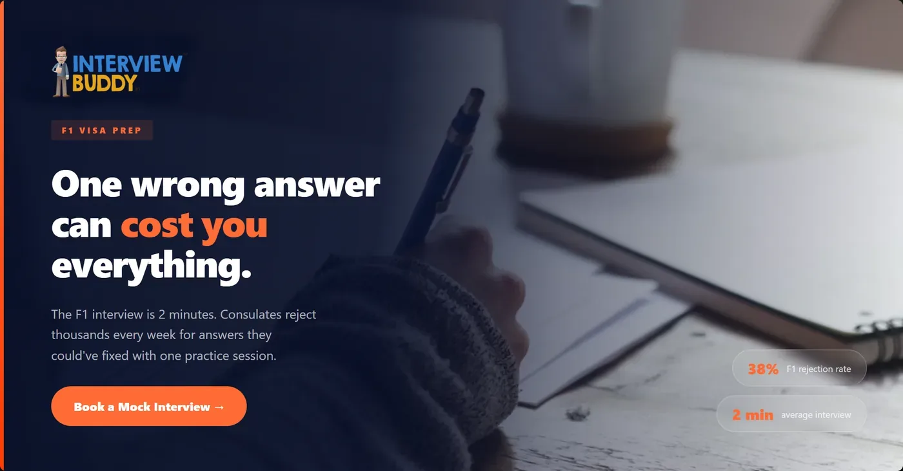
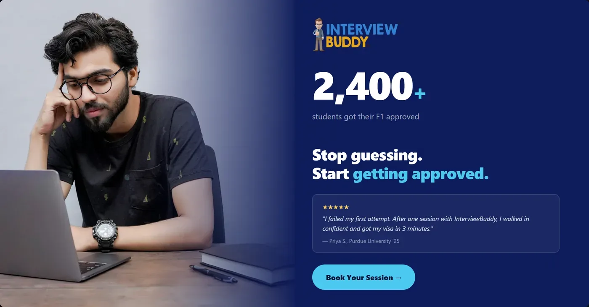

Film posters taught me one thing:
the eye decides before the brain does.
Typography, contrast, where you place the subject, these aren't aesthetic preferences, they're conversion decisions. I brought that same thinking to landing pages and paid ads. The work below shows the iteration, not just the final output.
3+
yrs designing
for film & brands
Landing page iteration
Volopay Corporate Cards, what changed between V1 and V2.
The V1 was a standard feature-first layout, hero with a CTA, then a feature grid. It looked like every other fintech landing page. V2 was a deliberate rewrite: lead with the buyer's problem, make the product feel premium, anchor the page in dark.
volopay.com/corporate-cards
Version 1
Original
volopay.com/corporate-cards
Version 2
Redesign
→
Headline rewrite
"The best corporate cards for all your business expenses" → problem-first framing. Generic superlatives don't convert CFOs, specific pain does.
→
Dark treatment
White backgrounds read as generic SaaS. The dark theme was a deliberate signal: this is a finance product for serious teams, not another startup tool.
→
Product hero prominence
V1 buried the product screenshot. V2 leads with it, buyers need to see the interface before they read the copy.
→
Trust logos moved up
Social proof belongs above the fold. Moved logos (MX Player, Invideo, Polygon, Antler) closer to the headline to reduce early skepticism.
Paid ad creative testing
InterviewBuddy, 4 creative variants, one brief.
Brief: drive signups for mock interview sessions. We ran 4 creative directions simultaneously to test which emotional angle resonated — fear of failure, social proof, outcome aspiration, or urgency. Each variant had the same offer and copy. The only variable was the emotional hook.

Hypothesis A
Fear + Stakes. Opens with the worst-case scenario. Tests whether naming the fear directly drives higher urgency than aspirational messaging.

Hypothesis B
Social proof. Peer validation as the hook. Tests whether "others like you succeeded" outperforms fear-based framing for this audience.
Hypothesis C
Outcome-led. Leads with the result, not the product. Tests whether showing the destination converts better than highlighting the risk.
Hypothesis D
Urgency. Time-pressure framing. Tests whether a deadline-driven message lifts CTR over benefit or proof-based hooks.
↗
What the test was really about
The copy and offer were identical across all 4. The only variable was the emotional framing — fear, proof, outcome, urgency. That isolation is what makes creative testing useful. When one variant outperforms, you know it was the angle, not the headline.
↗
What I'd change now
Fear and urgency tend to spike CTR but pull weaker-intent signups. I'd pair the outcome and social proof variants with a longer follow-up sequence — those audiences need more conviction before they convert. The test told us what hooks attention. The next question is what converts.
B2B landing page
AI SEO landing page, built to convert a skeptical B2B buyer.
The buyer here is a CMO or VP Marketing who has been burned by SEO agencies before. The page is designed around that specific psychology: lead with the problem they recognize, preempt the objection they're already forming, back everything with specifics.
01
Above-fold headline targets the conversation in the buyer's head, "Your Buyers Are Asking [Competitors] Who to Hire." Immediately establishes the cost of inaction without screaming at them.
02
Dark theme creates authority contrast, most SEO agency sites are white and loud. Dark + minimal signals confidence. The page doesn't need to shout.
03
Comparison table directly names the claim, "Every Agency Claims 'AI SEO.' Here's What Actually Differs." Skeptical buyers don't want to guess where you're different. Show them the diff.
04
FAQ section answers the unspoken objections, "Every Question Your Team Has, Answered." Removes the sales call barrier for informed buyers who just want clarity before they reach out.
Creative / Film posters
On the sidelines: 300+ posters. Zero budget. 40M impressions.
Indian cinema. Original poster work built on the side — no team, no paid reach. Just typography, composition, and knowing what makes someone stop scrolling.